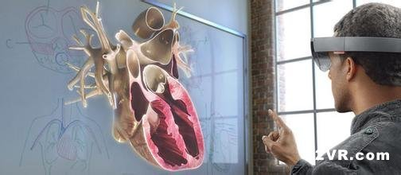
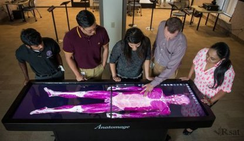
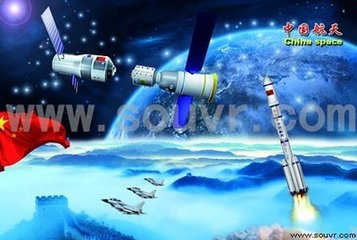
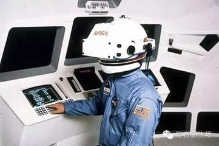

VR在军事领域&医学领域
军事领域
模拟训练一直是军事与航天工业中的一个重要课题，这为VR提供了广阔的应用前景。美国国防部高级研究计划局DARPA自80年代起一直致力于研究称为SIMNET的虚拟战场系统，以提供坦克协同训练，该系统可联结200多台模拟器。另外利用VR技术，可模拟零重力环境，替非标准的水下训练宇航员的方法美国国防部测绘局在1995年8月到9月北约对波黑进行大规模空袭期间，曾在意大利的空军基地建立一个作战模拟设施，利用侦查卫星拍摄的高分辨率图像和测绘提供的波黑地区的数字地图相结合，通过作战模拟所产生的灵镜环境，模拟战斗机在波黑上空的飞行
医学领域
VR在医学领域的应用前景非常广泛，Rosen认为，VR将构成最终实用的手术模拟器。作者描绘了虚拟现实技术的某些应用：医学教育、训练系统、辅助诊断、可行性研究、手术模拟、医学康复、远程医疗等诸多方面。但是，这些应用都存在很大的局限性，它们多是基于一种特殊结构的简化模型，或者是基于预处理原始图像的，又由于有些设备的实用性不是太好，目前还没有一种VR系统能够完全地用于具体的临床应用。虚拟现实离完全实用化还有很大差距。下面列举一些主要的VR应用领域。虚拟人体解剖图、虚拟人体功能,、虚拟手术模拟、远程手术。


 >
